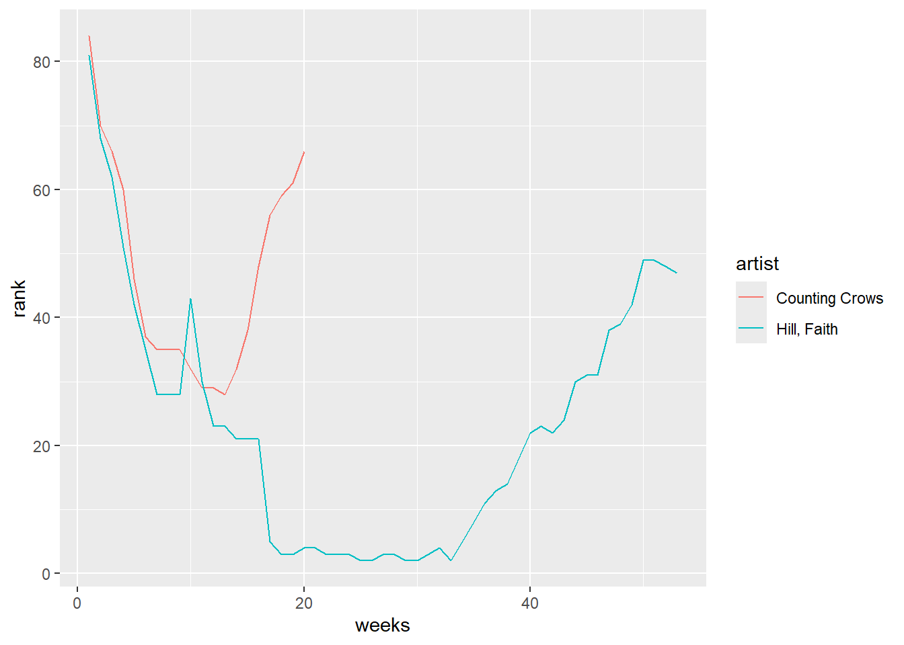

14 Reshaping
- Understand what it means to “reshape” data.
- Understand the difference between wide and long data formats.
- Be able to distinguish the units of observation for a given data set.
- Explore how to reshape data using
pivot_wider()andpivot_longer()fromtidyrpackage
For more information about the topics covered in this chapter, refer to the resources below:
- Demonstrating pivoting (YouTube) by Lisa Lendway
- Pivoting vignette (html) by tidyr
- Pivoting (html) by Wickham and Grolemund
- Reshaping data by Baumer, Kaplan, and Horton
14.1 Review
Example 1: warm-up counts and proportions
Recall the penguins we worked with last class:
Tally up the number of male/female penguins by species in 2 ways:
# A tibble: 8 × 3
species sex n
<chr> <chr> <int>
1 Adelie female 73
2 Adelie male 73
3 Adelie <NA> 6
4 Chinstrap female 34
5 Chinstrap male 34
6 Gentoo female 58
7 Gentoo male 61
8 Gentoo <NA> 5# A tibble: 8 × 3
# Groups: species [3]
species sex `n()`
<chr> <chr> <int>
1 Adelie female 73
2 Adelie male 73
3 Adelie <NA> 6
4 Chinstrap female 34
5 Chinstrap male 34
6 Gentoo female 58
7 Gentoo male 61
8 Gentoo <NA> 5Define a new column that includes the proportion or relative frequencies of male/female penguins in each species.
- We can’t do this by adjusting our
count()code, but can adjust thegroup_by()andsummarize()code since it’s still tracking the group categories in the background. - Does the order of
speciesandsexingroup_by()matter?
penguins |>
group_by(species,sex) |>
summarize(number=n()) |>
# group_by(species) |>
mutate(part=number/sum(number))# A tibble: 8 × 4
# Groups: species [3]
species sex number part
<chr> <chr> <int> <dbl>
1 Adelie female 73 0.480
2 Adelie male 73 0.480
3 Adelie <NA> 6 0.0395
4 Chinstrap female 34 0.5
5 Chinstrap male 34 0.5
6 Gentoo female 58 0.468
7 Gentoo male 61 0.492
8 Gentoo <NA> 5 0.0403Example 2: New data
What will the following code do? Think about it before running.
Example 3: units of observation
To get the information on average body masses, we reshaped our original data.
- Did the reshaping process change the units of observation?
# A tibble: 6 × 8
species island bill_length_mm bill_depth_mm flipper_length_mm body_mass_g
<chr> <chr> <dbl> <dbl> <dbl> <dbl>
1 Adelie Torgersen 39.1 18.7 181 3750
2 Adelie Torgersen 39.5 17.4 186 3800
3 Adelie Torgersen 40.3 18 195 3250
4 Adelie Torgersen NA NA NA NA
5 Adelie Torgersen 36.7 19.3 193 3450
6 Adelie Torgersen 39.3 20.6 190 3650
# ℹ 2 more variables: sex <chr>, year <dbl># Units of observation = the entire group of male/female penguins of a certain species
head(penguin_avg)# A tibble: 6 × 3
# Groups: species [3]
species sex avg_body_mass
<chr> <chr> <dbl>
1 Adelie female 3369.
2 Adelie male 4043.
3 Chinstrap female 3527.
4 Chinstrap male 3939.
5 Gentoo female 4680.
6 Gentoo male 5485.- Did the reshaping process result in any information loss from the original data? Yes, we lost a bunch! We lost all sorts of data on islands, flipper and bill size, and the year of obvservation, along with the specifics of each penguin, and any data on penguins with NA for any of their values ## Reshaping Data
There are two general types of reshaped data:
aggregate data
For example, usinggroup_by()withsummarize()gains aggregate information about our observations but loses data on individual observations.raw data, reshaped
We often want to retain all information on individual observations, but need to reshape it in order to perform the task at hand.
Example 4: reshape it with your mind
Let’s calculate the difference in average body mass, male vs female, for each species. Since penguin_avg is small, we could do these calculations by hand. But this doesn’t scale up to bigger datasets.
- Sketch out (on paper, in your head, anything) how this data would need to be reshaped, without losing any information, in order to calculate the differences in average body mass using our wrangling verbs. Make it as specific as possible, with column labels, entries, correct numbers, etc. We could have individual columns for male and female body mass, which we could then mutate to find the difference
- Identify the units of observation. Species on whole
Wider vs Longer formats
Making our data longer or wider reshapes the data, changing the units of observation while retaining all raw information:
- Make the data longer, i.e. combine values from multiple variables into 1 variable. Example:
1999and2000represent two years. We want to combine their results into 1 variable without losing any information.

- Make the data wider, i.e. spread out the values across new variables. Example:
casesandpoprepresent two categories withintype. To compare or combine theircountoutcomes side-by-side, we can separate them into their own variables.

Example 5: pivot wider
Because it’s a small enough dataset to examine all at once, let’s start with our penguin_avg data:
# A tibble: 6 × 3
# Groups: species [3]
species sex avg_body_mass
<chr> <chr> <dbl>
1 Adelie female 3369.
2 Adelie male 4043.
3 Chinstrap female 3527.
4 Chinstrap male 3939.
5 Gentoo female 4680.
6 Gentoo male 5485.With the goal of being able to calculate the difference in average body mass, male vs female, for each species, let’s make the dataset wider. That is, let’s get one row per species with separate columns for the average body mass by sex. Put this code into a chunk and run it:
# A tibble: 3 × 3
# Groups: species [3]
species female male
<chr> <dbl> <dbl>
1 Adelie 3369. 4043.
2 Chinstrap 3527. 3939.
3 Gentoo 4680. 5485.-
names_from= the variable whose values we want to separate into their own columns, i.e. where we want to get the new column names from -
values_from= which variable to take the new column values from
FOLLOW-UP:
- What are the units of observation? The species on whole
- Did we lose any information when we widened the data? Nope!
- Use the wide data to calculate the difference in average body mass, male vs female, for each species.
Example 6: Pivot longer
Let’s store our wide data:
penguin_avg_wide <- penguin_avg |>
pivot_wider(names_from = sex, values_from = avg_body_mass)
penguin_avg_wide# A tibble: 3 × 3
# Groups: species [3]
species female male
<chr> <dbl> <dbl>
1 Adelie 3369. 4043.
2 Chinstrap 3527. 3939.
3 Gentoo 4680. 5485.Suppose we wanted to change this data back to a longer format. In general, this happens when some variables (here female and male) represent two categories or values of some broader variable (here sex), and we want to combine them into that 1 variable without losing any information. Let’s pivot_longer():
# We can either communicate which variables we WANT to collect into a single column (female, male)
penguin_avg_wide |>
pivot_longer(cols = c(female, male), names_to = "sex", values_to = "avg_body_mass")# A tibble: 6 × 3
# Groups: species [3]
species sex avg_body_mass
<chr> <chr> <dbl>
1 Adelie female 3369.
2 Adelie male 4043.
3 Chinstrap female 3527.
4 Chinstrap male 3939.
5 Gentoo female 4680.
6 Gentoo male 5485.# Or which variable(s) we do NOT want to collect into a single column (sex)
penguin_avg_wide |>
pivot_longer(cols = -species, names_to = "sex", values_to = "avg_body_mass")# A tibble: 6 × 3
# Groups: species [3]
species sex avg_body_mass
<chr> <chr> <dbl>
1 Adelie female 3369.
2 Adelie male 4043.
3 Chinstrap female 3527.
4 Chinstrap male 3939.
5 Gentoo female 4680.
6 Gentoo male 5485.-
cols= the columns (variables) to collect into a single, new variable. We can also specify what variables we don’t want to collect -
names_to= the name of the new variable which will include the names or labels of the collected variables -
values_to= the name of the new variable which will include the values of the collected variables
FOLLOW-UP:
- What are the units of observation? Male/female populations of each species
- Did we lose any information when we lengthened the data? Nope!
- Why did we put the variables in quotes “” here but not when we used
pivot_wider()? Because the sex and avg_body mass columns no longer exist, so we are defining their names, rather than calling an object
Example 7: Practice
Let’s make up some data on the orders of 2 different customers at 3 different restaurants:
food <- data.frame(
customer = rep(c("A", "B"), each = 3),
restaurant = rep(c("Shish", "FrenchMeadow", "DunnBros"), 2),
order = c("falafel", "salad", "coffee", "baklava", "pastry", "tea")
)
food customer restaurant order
1 A Shish falafel
2 A FrenchMeadow salad
3 A DunnBros coffee
4 B Shish baklava
5 B FrenchMeadow pastry
6 B DunnBros teaThe units of observation in food are customer / restaurant combinations. Wrangle this data so that the units of observation are customers, spreading the restaurants into separate columns.
# A tibble: 2 × 4
customer Shish FrenchMeadow DunnBros
<chr> <chr> <chr> <chr>
1 A falafel salad coffee
2 B baklava pastry tea Consider 2 more customers:
more_food <- data.frame(
customer = c("C", "D"),
Shish = c("coffee", "maza"),
FrenchMeadow = c("soup", "sandwich"),
DunnBros = c("cookie", "coffee")
)
more_food customer Shish FrenchMeadow DunnBros
1 C coffee soup cookie
2 D maza sandwich coffeeWrangle this data so that the 3 restaurant columns are combined into 1, hence the units of observation are customer / restaurant combinations.
14.2 Exercises
Exercise 1: What’s the problem?
Consider data on a sleep study in which subjects received only 3 hours of sleep per night. Each day, their reaction time to a stimulus (in ms) was recorded.1
Subject day_0 day_1 day_2 day_3 day_4 day_5 day_6 day_7 day_8 day_9
1 308 249.56 258.70 250.80 321.44 356.85 414.69 382.20 290.15 430.59 466.35
2 309 222.73 205.27 202.98 204.71 207.72 215.96 213.63 217.73 224.30 237.31
3 310 199.05 194.33 234.32 232.84 229.31 220.46 235.42 255.75 261.01 247.52
4 330 321.54 300.40 283.86 285.13 285.80 297.59 280.24 318.26 305.35 354.05
5 331 287.61 285.00 301.82 320.12 316.28 293.32 290.08 334.82 293.75 371.58
6 332 234.86 242.81 272.96 309.77 317.46 310.00 454.16 346.83 330.30 253.86Part a
What are the units of observation in sleep_wide? Test Subjects
Part b
Suppose I ask you to plot each subject’s reaction time (y-axis) vs the number of days of sleep restriction (x-axis). “Sketch” out in words what the first few rows of the data need to look like in order to do this. It might help to think about what you’d need to complete the plotting frame:
You would want to have each day as its own row, with each subject having one for each of th 9 days. the reaction times would end up in another column. it might look something like
subject day react_ms 308 0 249.56 308 1 258.70
ggplot(sleep_long, aes(y = react_ms, x = day, color = Subject))
Part c
How can you obtain the dataset you sketched in part b?
- just using
sleep_wide pivot_longer()pivot_wider()
pivot_longer() would probably be best!
Exercise 2: Pivot longer
To plot reaction time by day for each subject, we need to reshape the data into a long format where each row represents a subject/day combination. Specifically, we want a dataset with 3 columns and a first few rows that look something like this:
| Subject | day | reaction_time |
|---|---|---|
| 308 | 0 | 249.56 |
| 308 | 1 | 258.70 |
| 308 | 2 | 250.80 |
Part a
Use pivot_longer() to create the long-format dataset above. Show the first 3 lines (head(3)), which should be similar to those above. Follow-up: Thinking forward to plotting reaction time vs day for each subject, what would you like to fix / change about this dataset?
# For cols, try 2 appproaches: using - and starts_with
sleep_wide |>
pivot_longer(cols = -Subject, names_to = "day", values_to = "react_ms") |>
head(3)# A tibble: 3 × 3
Subject day react_ms
<int> <chr> <dbl>
1 308 day_0 250.
2 308 day_1 259.
3 308 day_2 251.sleep_wide |>
pivot_longer(cols =starts_with("day"), names_to = "day", values_to = "react_ms") |>
head(3)# A tibble: 3 × 3
Subject day react_ms
<int> <chr> <dbl>
1 308 day_0 250.
2 308 day_1 259.
3 308 day_2 251.Part b
Run this chunk:
sleep_long <- sleep_wide |>
pivot_longer(cols = -Subject,
names_to = "day",
names_prefix = "day_",
values_to = "reaction_time")
head(sleep_long)# A tibble: 6 × 3
Subject day reaction_time
<int> <chr> <dbl>
1 308 0 250.
2 308 1 259.
3 308 2 251.
4 308 3 321.
5 308 4 357.
6 308 5 415.Follow-up:
- Besides putting each argument on a different line for readability and storing the results, what changed in the code? It removed the “day” from the start of the values in the day coloumn (which was originally part of their object label)
- How did this impact how the values are recorded in the
daycolumn? It made them into integers, although they are still class chr #### Part c {.unnumbered}
Using sleep_long, construct a line plot of reaction time vs day for each subject. This will look goofy no matter what you do. Why? HINT: look back at head(sleep_long). What class or type of variables are Subject and day? Subject is an integer (Why? Like in the first place…) and day is a character string What do we want them to be? The reverse!
Exercise 3: Changing variable classes & plotting
Let’s finalize sleep_long by mutating the Subject variable to be a factor (categorical) and the day variable to be numeric (quantitative). Take note of the mutate() code! You’ll use this type of code a lot.
sleep_long <- sleep_wide |>
pivot_longer(cols = -Subject,
names_to = "day",
names_prefix = "day_",
values_to = "reaction_time") |>
mutate(Subject = as.factor(Subject), day = as.numeric(day))
# Check it out
# Same data, different class
head(sleep_long)# A tibble: 6 × 3
Subject day reaction_time
<fct> <dbl> <dbl>
1 308 0 250.
2 308 1 259.
3 308 2 251.
4 308 3 321.
5 308 4 357.
6 308 5 415.Part a
Now make some plots.

Part b
Summarize what you learned from the plots. For example:
- What’s the general relationship between reaction time and sleep? Reaction time increases (that is, gets longer) as days of sleeping 3 hours increase
- Is this the same for everybody? What differs? Nope! Some had major outliers of both faster and slower reaction time, of course, but the general trends also differed between subjects. Some had a delayed response, and some people weren’t significantly affected. for Subject 335, their reaction time actually got better
Exercise 4: Pivot wider
Make the data wide again, with each day becoming its own column.
Part a
Adjust the code below. What don’t you like about the column labels?
# A tibble: 6 × 11
Subject `0` `1` `2` `3` `4` `5` `6` `7` `8` `9`
<fct> <dbl> <dbl> <dbl> <dbl> <dbl> <dbl> <dbl> <dbl> <dbl> <dbl>
1 308 250. 259. 251. 321. 357. 415. 382. 290. 431. 466.
2 309 223. 205. 203. 205. 208. 216. 214. 218. 224. 237.
3 310 199. 194. 234. 233. 229. 220. 235. 256. 261. 248.
4 330 322. 300. 284. 285. 286. 298. 280. 318. 305. 354.
5 331 288. 285 302. 320. 316. 293. 290. 335. 294. 372.
6 332 235. 243. 273. 310. 317. 310 454. 347. 330. 254.Part b
Using your intuition, adjust your code from part a to name the reaction time columns “day_0”, “day_1”, etc.
sleep_long |>
pivot_wider(names_from = day, values_from = reaction_time, names_prefix = "day_") |>
head()# A tibble: 6 × 11
Subject day_0 day_1 day_2 day_3 day_4 day_5 day_6 day_7 day_8 day_9
<fct> <dbl> <dbl> <dbl> <dbl> <dbl> <dbl> <dbl> <dbl> <dbl> <dbl>
1 308 250. 259. 251. 321. 357. 415. 382. 290. 431. 466.
2 309 223. 205. 203. 205. 208. 216. 214. 218. 224. 237.
3 310 199. 194. 234. 233. 229. 220. 235. 256. 261. 248.
4 330 322. 300. 284. 285. 286. 298. 280. 318. 305. 354.
5 331 288. 285 302. 320. 316. 293. 290. 335. 294. 372.
6 332 235. 243. 273. 310. 317. 310 454. 347. 330. 254.Exercise 5: Practice with Billboard charts
Load data on songs that hit the billboard charts around the year 2000. Included for each song is the artist name, track name, the date it hit the charts (date.enter), and wk-related variables that indicate rankings in each subsequent week on the charts:
# A tibble: 6 × 79
artist track date.entered wk1 wk2 wk3 wk4 wk5 wk6 wk7 wk8
<chr> <chr> <date> <dbl> <dbl> <dbl> <dbl> <dbl> <dbl> <dbl> <dbl>
1 2 Pac Baby… 2000-02-26 87 82 72 77 87 94 99 NA
2 2Ge+her The … 2000-09-02 91 87 92 NA NA NA NA NA
3 3 Doors Do… Kryp… 2000-04-08 81 70 68 67 66 57 54 53
4 3 Doors Do… Loser 2000-10-21 76 76 72 69 67 65 55 59
5 504 Boyz Wobb… 2000-04-15 57 34 25 17 17 31 36 49
6 98^0 Give… 2000-08-19 51 39 34 26 26 19 2 2
# ℹ 68 more variables: wk9 <dbl>, wk10 <dbl>, wk11 <dbl>, wk12 <dbl>,
# wk13 <dbl>, wk14 <dbl>, wk15 <dbl>, wk16 <dbl>, wk17 <dbl>, wk18 <dbl>,
# wk19 <dbl>, wk20 <dbl>, wk21 <dbl>, wk22 <dbl>, wk23 <dbl>, wk24 <dbl>,
# wk25 <dbl>, wk26 <dbl>, wk27 <dbl>, wk28 <dbl>, wk29 <dbl>, wk30 <dbl>,
# wk31 <dbl>, wk32 <dbl>, wk33 <dbl>, wk34 <dbl>, wk35 <dbl>, wk36 <dbl>,
# wk37 <dbl>, wk38 <dbl>, wk39 <dbl>, wk40 <dbl>, wk41 <dbl>, wk42 <dbl>,
# wk43 <dbl>, wk44 <dbl>, wk45 <dbl>, wk46 <dbl>, wk47 <dbl>, wk48 <dbl>, …In using this data, you’ll need to determine if and when the data needs to be reshaped for the task at hand.
Part a
Construct and summarize a plot of how a song’s Billboard ranking its 2nd week on the chart (y-axis) is related to its ranking the 1st week on the charts (x-axis). Add a reference line geom_abline(intercept = 0, slope = 1). Songs above this line improved their rankings from the 1st to 2nd week.

Part b
Use your wrangling tools to identify which songs are those above the line in Part a, i.e. with rankgings that went up from week 1 to week 2.
# A tibble: 7 × 79
artist track date.entered wk1 wk2 wk3 wk4 wk5 wk6 wk7 wk8
<chr> <chr> <date> <dbl> <dbl> <dbl> <dbl> <dbl> <dbl> <dbl> <dbl>
1 Carey, Mar… Cryb… 2000-06-24 28 34 48 62 77 90 95 NA
2 Clark, Ter… A Li… 2000-12-16 75 82 88 96 99 99 NA NA
3 Diffie, Joe The … 2000-01-01 98 100 100 90 93 94 NA NA
4 Hart, Beth L.A.… 1999-11-27 99 100 98 99 99 99 98 90
5 Jay-Z Hey … 2000-08-12 98 100 98 94 83 83 80 78
6 Lil' Zane Call… 2000-07-29 83 89 57 40 34 21 33 46
7 Pearl Jam Noth… 2000-05-13 49 70 84 89 93 91 NA NA
# ℹ 68 more variables: wk9 <dbl>, wk10 <dbl>, wk11 <dbl>, wk12 <dbl>,
# wk13 <dbl>, wk14 <dbl>, wk15 <dbl>, wk16 <dbl>, wk17 <dbl>, wk18 <dbl>,
# wk19 <dbl>, wk20 <dbl>, wk21 <dbl>, wk22 <dbl>, wk23 <dbl>, wk24 <dbl>,
# wk25 <dbl>, wk26 <dbl>, wk27 <dbl>, wk28 <dbl>, wk29 <dbl>, wk30 <dbl>,
# wk31 <dbl>, wk32 <dbl>, wk33 <dbl>, wk34 <dbl>, wk35 <dbl>, wk36 <dbl>,
# wk37 <dbl>, wk38 <dbl>, wk39 <dbl>, wk40 <dbl>, wk41 <dbl>, wk42 <dbl>,
# wk43 <dbl>, wk44 <dbl>, wk45 <dbl>, wk46 <dbl>, wk47 <dbl>, wk48 <dbl>, …Part c
Define a new dataset, nov_1999, which:
- only includes data on songs that entered the Billboard charts on November 6, 1999
- keeps all variables except
trackanddate.entered. HINT: How can you avoid writing out all the variable names you want to keep?
# Define nov_1999
nov_1999 <- billboard|>
filter(date.entered=="1999-11-06") |>
select(!c(track,date.entered))
# Confirm that nov_1999 has 2 rows (songs) and 77 columns
nov_1999# A tibble: 2 × 77
artist wk1 wk2 wk3 wk4 wk5 wk6 wk7 wk8 wk9 wk10 wk11 wk12
<chr> <dbl> <dbl> <dbl> <dbl> <dbl> <dbl> <dbl> <dbl> <dbl> <dbl> <dbl> <dbl>
1 Count… 84 70 66 60 46 37 35 35 35 32 29 29
2 Hill,… 81 68 62 51 42 35 28 28 28 43 30 23
# ℹ 64 more variables: wk13 <dbl>, wk14 <dbl>, wk15 <dbl>, wk16 <dbl>,
# wk17 <dbl>, wk18 <dbl>, wk19 <dbl>, wk20 <dbl>, wk21 <dbl>, wk22 <dbl>,
# wk23 <dbl>, wk24 <dbl>, wk25 <dbl>, wk26 <dbl>, wk27 <dbl>, wk28 <dbl>,
# wk29 <dbl>, wk30 <dbl>, wk31 <dbl>, wk32 <dbl>, wk33 <dbl>, wk34 <dbl>,
# wk35 <dbl>, wk36 <dbl>, wk37 <dbl>, wk38 <dbl>, wk39 <dbl>, wk40 <dbl>,
# wk41 <dbl>, wk42 <dbl>, wk43 <dbl>, wk44 <dbl>, wk45 <dbl>, wk46 <dbl>,
# wk47 <dbl>, wk48 <dbl>, wk49 <dbl>, wk50 <dbl>, wk51 <dbl>, wk52 <dbl>, …Part d
Create and discuss a visualization of the rankings (y-axis) over time (x-axis) for the 2 songs in nov_1999. There are hints below (if you scroll), but you’re encouraged to play around and use as few hints as possible.
nov_1999 |>
pivot_longer(cols=-artist,names_to = "weeks",values_to = "rank",names_prefix = "wk") |>
mutate(weeks=as.numeric(weeks)) |>
na.omit()|>
ggplot(aes(x=weeks,y=rank,color=artist)) +
geom_line()
Hints:
- Should you first pivot wider or longer?
- Once you pivot, the week number is turned into a character variable. How can you change it to a number?
Exercise 6: Practice with the Daily Show
The data associated with this article is available in the fivethirtyeight package, and is loaded into daily below. It includes a list of every guest to ever appear on Jon Stewart’s The Daily Show, a “late-night talk and satirical news” program (per Wikipedia). Check out the dataset and note that when multiple people appeared together, each person receives their own line:
# A tibble: 2,693 × 5
year google_knowledge_occupation show group raw_guest_list
<int> <chr> <date> <chr> <chr>
1 1999 actor 1999-01-11 Acting Michael J. Fox
2 1999 comedian 1999-01-12 Comedy Sandra Bernhard
3 1999 television actress 1999-01-13 Acting Tracey Ullman
4 1999 film actress 1999-01-14 Acting Gillian Anderson
5 1999 actor 1999-01-18 Acting David Alan Grier
6 1999 actor 1999-01-19 Acting William Baldwin
7 1999 singer-lyricist 1999-01-20 Musician Michael Stipe
8 1999 model 1999-01-21 Media Carmen Electra
9 1999 actor 1999-01-25 Acting Matthew Lillard
10 1999 stand-up comedian 1999-01-26 Comedy David Cross
# ℹ 2,683 more rowsIn analyzing this data, you’ll need to determine if and when the data needs to be reshaped.
Part a
Identify the 15 guests that appeared the most. (This isn’t a very diverse guest list!)
daily |>
group_by(raw_guest_list) |>
summarize(appearances=n()) |>
arrange(desc(appearances)) |>
head(15)# A tibble: 15 × 2
raw_guest_list appearances
<chr> <int>
1 Fareed Zakaria 19
2 Denis Leary 17
3 Brian Williams 16
4 Paul Rudd 13
5 Ricky Gervais 13
6 Tom Brokaw 12
7 Bill O'Reilly 10
8 Reza Aslan 10
9 Richard Lewis 10
10 Will Ferrell 10
11 Sarah Vowell 9
12 Adam Sandler 8
13 Ben Affleck 8
14 Louis C.K. 8
15 Maggie Gyllenhaal 8Part b
CHALLENGE: Create the following data set containing 19 columns:
- The first column should have the 15 guests with the highest number of total appearances on the show, listed in descending order of number of appearances.
- 17 columns should show the number of appearances of the corresponding guest in each year from 1999 to 2015 (one per column).
- Another column should show the total number of appearances for the corresponding guest over the entire duration of the show.
There are hints below (if you scroll), but you’re encouraged to play around and use as few hints as possible.
daily |>
group_by(raw_guest_list,year) |>
summarize(num=n()) |>
mutate("total"=sum(num)) |>
arrange(year) |>
pivot_wider(names_from = year,values_from = num,names_prefix = "app_",values_fill = 0) |>
# mutate("total"=app_1999+app_2000+app_2001+app_2002+app_2003+app_2004+app_2005+app_2006+app_2007+app_2008+app_2009+app_2010+app_2011+app_2012+app_2013+app_2014+app_2015) |>
arrange(desc(total)) |>
head(15)# A tibble: 15 × 19
# Groups: raw_guest_list [15]
raw_guest_list total app_1999 app_2000 app_2001 app_2002 app_2003 app_2004
<chr> <int> <int> <int> <int> <int> <int> <int>
1 Fareed Zakaria 19 0 0 1 0 1 2
2 Denis Leary 17 1 0 1 2 1 0
3 Brian Williams 16 0 0 0 0 1 1
4 Paul Rudd 13 1 0 1 1 1 1
5 Ricky Gervais 13 0 0 0 0 0 0
6 Tom Brokaw 12 0 0 0 1 0 2
7 Richard Lewis 10 1 0 2 2 1 1
8 Will Ferrell 10 0 1 1 0 1 1
9 Bill O'Reilly 10 0 0 1 1 0 1
10 Reza Aslan 10 0 0 0 0 0 0
11 Sarah Vowell 9 0 0 0 1 0 1
12 Adam Sandler 8 1 2 0 1 0 0
13 Ben Affleck 8 0 0 0 0 2 0
14 Maggie Gyllenhaal 8 0 0 0 0 1 0
15 Louis C.K. 8 0 0 0 0 0 0
# ℹ 11 more variables: app_2005 <int>, app_2006 <int>, app_2007 <int>,
# app_2008 <int>, app_2009 <int>, app_2010 <int>, app_2011 <int>,
# app_2012 <int>, app_2013 <int>, app_2014 <int>, app_2015 <int>HINTS: There are lots of ways to do this. You don’t necessarily need all of these hints.
- First obtain the number of times a guest appears each year.
- Add a new column which includes the total number of times a guest appears across all years.
- Pivot (longer or wider?). When you do, use
values_fill = 0to replace NA values with 0. - Arrange, then and keep the top 15.
Part c
Let’s recreate the first figure from the article. This groups all guests into 3 broader occupational categories. However, our current data has 18 categories:
# A tibble: 18 × 2
group n
<chr> <int>
1 Academic 103
2 Acting 930
3 Advocacy 24
4 Athletics 52
5 Business 25
6 Clergy 8
7 Comedy 150
8 Consultant 18
9 Government 40
10 Media 751
11 Military 16
12 Misc 45
13 Musician 123
14 Political Aide 36
15 Politician 308
16 Science 28
17 media 5
18 <NA> 31Let’s define a new dataset that includes a new variable, broad_group, that buckets these 18 categories into the 3 bigger ones used in the article. And get rid of any rows missing information on broad_group. You’ll learn the code soon! For now, just run this chunk:
plot_data <- daily |>
mutate(broad_group = case_when(
group %in% c("Acting", "Athletics", "Comedy", "Musician") ~ "Acting, Comedy & Music",
group %in% c("Media", "media", "Science", "Academic", "Consultant", "Clergy") ~ "Media",
group %in% c("Politician", "Political Aide", "Government", "Military", "Business", "Advocacy") ~ "Government and Politics",
.default = NA
)) |>
filter(!is.na(broad_group))Now, using the broad_group variable in plot_data, recreate the graphic from the article, with three different lines showing the fraction of guests in each group over time. Note: You’ll have to wrangle the data first.
14.3 Solutions
Click for Solutions
Example 1: warm-up counts and proportions
# A tibble: 8 × 3
species sex n
<chr> <chr> <int>
1 Adelie female 73
2 Adelie male 73
3 Adelie <NA> 6
4 Chinstrap female 34
5 Chinstrap male 34
6 Gentoo female 58
7 Gentoo male 61
8 Gentoo <NA> 5# A tibble: 8 × 3
# Groups: species [3]
species sex `n()`
<chr> <chr> <int>
1 Adelie female 73
2 Adelie male 73
3 Adelie <NA> 6
4 Chinstrap female 34
5 Chinstrap male 34
6 Gentoo female 58
7 Gentoo male 61
8 Gentoo <NA> 5# Relative frequencies
penguins |>
group_by(species, sex) |>
summarize(n = n()) |>
mutate(proportion = n / sum(n))# A tibble: 8 × 4
# Groups: species [3]
species sex n proportion
<chr> <chr> <int> <dbl>
1 Adelie female 73 0.480
2 Adelie male 73 0.480
3 Adelie <NA> 6 0.0395
4 Chinstrap female 34 0.5
5 Chinstrap male 34 0.5
6 Gentoo female 58 0.468
7 Gentoo male 61 0.492
8 Gentoo <NA> 5 0.0403# Changing the order calculates the proportion of species within each sex
penguins |>
group_by(sex, species) |>
summarize(n = n()) |>
mutate(proportion = n / sum(n))# A tibble: 8 × 4
# Groups: sex [3]
sex species n proportion
<chr> <chr> <int> <dbl>
1 female Adelie 73 0.442
2 female Chinstrap 34 0.206
3 female Gentoo 58 0.352
4 male Adelie 73 0.435
5 male Chinstrap 34 0.202
6 male Gentoo 61 0.363
7 <NA> Adelie 6 0.545
8 <NA> Gentoo 5 0.455Example 3: units of observation
# A tibble: 6 × 8
species island bill_length_mm bill_depth_mm flipper_length_mm body_mass_g
<chr> <chr> <dbl> <dbl> <dbl> <dbl>
1 Adelie Torgersen 39.1 18.7 181 3750
2 Adelie Torgersen 39.5 17.4 186 3800
3 Adelie Torgersen 40.3 18 195 3250
4 Adelie Torgersen NA NA NA NA
5 Adelie Torgersen 36.7 19.3 193 3450
6 Adelie Torgersen 39.3 20.6 190 3650
# ℹ 2 more variables: sex <chr>, year <dbl># A tibble: 6 × 3
# Groups: species [3]
species sex avg_body_mass
<chr> <chr> <dbl>
1 Adelie female 3369.
2 Adelie male 4043.
3 Chinstrap female 3527.
4 Chinstrap male 3939.
5 Gentoo female 4680.
6 Gentoo male 5485.Example 5: pivot wider
# A tibble: 3 × 3
# Groups: species [3]
species female male
<chr> <dbl> <dbl>
1 Adelie 3369. 4043.
2 Chinstrap 3527. 3939.
3 Gentoo 4680. 5485.FOLLOW-UP:
What are the units of observation? species
Did we lose any information when we widened the data? no
Use the wide data to calculate the difference in average body mass, male vs female, for each species.
Example 6: Pivot longer
# We can either communicate which variables we WANT to collect into a single column (female, male)
penguin_avg_wide |>
pivot_longer(cols = c(female, male), names_to = "sex", values_to = "avg_body_mass")# A tibble: 6 × 3
# Groups: species [3]
species sex avg_body_mass
<chr> <chr> <dbl>
1 Adelie female 3369.
2 Adelie male 4043.
3 Chinstrap female 3527.
4 Chinstrap male 3939.
5 Gentoo female 4680.
6 Gentoo male 5485.# Or which variable(s) we do NOT want to collect into a single column (sex)
penguin_avg_wide |>
pivot_longer(cols = -species, names_to = "sex", values_to = "avg_body_mass")# A tibble: 6 × 3
# Groups: species [3]
species sex avg_body_mass
<chr> <chr> <dbl>
1 Adelie female 3369.
2 Adelie male 4043.
3 Chinstrap female 3527.
4 Chinstrap male 3939.
5 Gentoo female 4680.
6 Gentoo male 5485.FOLLOW-UP:
What are the units of observation? species/sex combos
Did we lose any information when we lengthened the data? no
14.3.1 Example 7: Practice [-]
food <- data.frame(
customer = rep(c("A", "B"), each = 3),
restaurant = rep(c("Shish", "FrenchMeadow", "DunnBros"), 2),
order = c("falafel", "salad", "coffee", "baklava", "pastry", "tea")
)
food customer restaurant order
1 A Shish falafel
2 A FrenchMeadow salad
3 A DunnBros coffee
4 B Shish baklava
5 B FrenchMeadow pastry
6 B DunnBros tea# A tibble: 2 × 4
customer Shish FrenchMeadow DunnBros
<chr> <chr> <chr> <chr>
1 A falafel salad coffee
2 B baklava pastry tea more_food <- data.frame(
customer = c("C", "D"),
Shish = c("coffee", "maza"),
FrenchMeadow = c("soup", "sandwich"),
DunnBros = c("cookie", "coffee")
)
more_food customer Shish FrenchMeadow DunnBros
1 C coffee soup cookie
2 D maza sandwich coffee# A tibble: 6 × 3
customer restaurant order
<chr> <chr> <chr>
1 C Shish coffee
2 C FrenchMeadow soup
3 C DunnBros cookie
4 D Shish maza
5 D FrenchMeadow sandwich
6 D DunnBros coffee Exercise 1: What’s the problem?
Part a
subjects/people
Part c
pivot_longer()
Exercise 2: Pivot longer
Part a
# For cols, try 2 appproaches: using - and starts_with
sleep_wide |>
pivot_longer(cols = -Subject, names_to = "day", values_to = "reaction_time")# A tibble: 180 × 3
Subject day reaction_time
<int> <chr> <dbl>
1 308 day_0 250.
2 308 day_1 259.
3 308 day_2 251.
4 308 day_3 321.
5 308 day_4 357.
6 308 day_5 415.
7 308 day_6 382.
8 308 day_7 290.
9 308 day_8 431.
10 308 day_9 466.
# ℹ 170 more rowssleep_wide |>
pivot_longer(cols = starts_with("day"), names_to = "day", values_to = "reaction_time")# A tibble: 180 × 3
Subject day reaction_time
<int> <chr> <dbl>
1 308 day_0 250.
2 308 day_1 259.
3 308 day_2 251.
4 308 day_3 321.
5 308 day_4 357.
6 308 day_5 415.
7 308 day_6 382.
8 308 day_7 290.
9 308 day_8 431.
10 308 day_9 466.
# ℹ 170 more rowsPart b
Adding names_prefix = "day_" removed “day_” from the start of the day entries. did this impact how the values are recorded in the day column?
Part c
Subject is an integer and day is a character. We want them to be categorical (factor) and numeric, respectively.

Exercise 3: Changing variable classes & plotting
Part a
Now make some plots.

Part b
Reaction time increases (worsens) with a lack of sleep. Some subjects seem to be more impacted than others by lack of sleep, and some tend to have faster/slower reaction times in general.
Exercise 4: Pivot wider
Part a
# A tibble: 6 × 11
Subject `0` `1` `2` `3` `4` `5` `6` `7` `8` `9`
<fct> <dbl> <dbl> <dbl> <dbl> <dbl> <dbl> <dbl> <dbl> <dbl> <dbl>
1 308 250. 259. 251. 321. 357. 415. 382. 290. 431. 466.
2 309 223. 205. 203. 205. 208. 216. 214. 218. 224. 237.
3 310 199. 194. 234. 233. 229. 220. 235. 256. 261. 248.
4 330 322. 300. 284. 285. 286. 298. 280. 318. 305. 354.
5 331 288. 285 302. 320. 316. 293. 290. 335. 294. 372.
6 332 235. 243. 273. 310. 317. 310 454. 347. 330. 254.Part b
sleep_long |>
pivot_wider(names_from = day, values_from = reaction_time, names_prefix = "day_") |>
head()# A tibble: 6 × 11
Subject day_0 day_1 day_2 day_3 day_4 day_5 day_6 day_7 day_8 day_9
<fct> <dbl> <dbl> <dbl> <dbl> <dbl> <dbl> <dbl> <dbl> <dbl> <dbl>
1 308 250. 259. 251. 321. 357. 415. 382. 290. 431. 466.
2 309 223. 205. 203. 205. 208. 216. 214. 218. 224. 237.
3 310 199. 194. 234. 233. 229. 220. 235. 256. 261. 248.
4 330 322. 300. 284. 285. 286. 298. 280. 318. 305. 354.
5 331 288. 285 302. 320. 316. 293. 290. 335. 294. 372.
6 332 235. 243. 273. 310. 317. 310 454. 347. 330. 254.Exercise 5: Practice with Billboard charts
Part a
The higher a song’s week 1 rating, the higher its week 2 rating tends to be. But almost all song’s rankings drop from week 1 to week 2.
Part b
# A tibble: 7 × 79
artist track date.entered wk1 wk2 wk3 wk4 wk5 wk6 wk7 wk8
<chr> <chr> <date> <dbl> <dbl> <dbl> <dbl> <dbl> <dbl> <dbl> <dbl>
1 Carey, Mar… Cryb… 2000-06-24 28 34 48 62 77 90 95 NA
2 Clark, Ter… A Li… 2000-12-16 75 82 88 96 99 99 NA NA
3 Diffie, Joe The … 2000-01-01 98 100 100 90 93 94 NA NA
4 Hart, Beth L.A.… 1999-11-27 99 100 98 99 99 99 98 90
5 Jay-Z Hey … 2000-08-12 98 100 98 94 83 83 80 78
6 Lil' Zane Call… 2000-07-29 83 89 57 40 34 21 33 46
7 Pearl Jam Noth… 2000-05-13 49 70 84 89 93 91 NA NA
# ℹ 68 more variables: wk9 <dbl>, wk10 <dbl>, wk11 <dbl>, wk12 <dbl>,
# wk13 <dbl>, wk14 <dbl>, wk15 <dbl>, wk16 <dbl>, wk17 <dbl>, wk18 <dbl>,
# wk19 <dbl>, wk20 <dbl>, wk21 <dbl>, wk22 <dbl>, wk23 <dbl>, wk24 <dbl>,
# wk25 <dbl>, wk26 <dbl>, wk27 <dbl>, wk28 <dbl>, wk29 <dbl>, wk30 <dbl>,
# wk31 <dbl>, wk32 <dbl>, wk33 <dbl>, wk34 <dbl>, wk35 <dbl>, wk36 <dbl>,
# wk37 <dbl>, wk38 <dbl>, wk39 <dbl>, wk40 <dbl>, wk41 <dbl>, wk42 <dbl>,
# wk43 <dbl>, wk44 <dbl>, wk45 <dbl>, wk46 <dbl>, wk47 <dbl>, wk48 <dbl>, …Part c
Part c
Exercise 6: Practice with the Daily Show
Part a
# A tibble: 15 × 2
raw_guest_list n
<chr> <int>
1 Fareed Zakaria 19
2 Denis Leary 17
3 Brian Williams 16
4 Paul Rudd 13
5 Ricky Gervais 13
6 Tom Brokaw 12
7 Bill O'Reilly 10
8 Reza Aslan 10
9 Richard Lewis 10
10 Will Ferrell 10
11 Sarah Vowell 9
12 Adam Sandler 8
13 Ben Affleck 8
14 Louis C.K. 8
15 Maggie Gyllenhaal 8Part b
daily |>
count(year, raw_guest_list) |>
group_by(raw_guest_list) |>
mutate(total = sum(n)) |>
pivot_wider(names_from = year,
values_from = n,
values_fill = 0) |>
arrange(desc(total)) |>
head(15)# A tibble: 15 × 19
# Groups: raw_guest_list [15]
raw_guest_list total `1999` `2000` `2001` `2002` `2003` `2004` `2005` `2006`
<chr> <int> <int> <int> <int> <int> <int> <int> <int> <int>
1 Fareed Zakaria 19 0 0 1 0 1 2 2 2
2 Denis Leary 17 1 0 1 2 1 0 0 1
3 Brian Williams 16 0 0 0 0 1 1 2 1
4 Paul Rudd 13 1 0 1 1 1 1 1 0
5 Ricky Gervais 13 0 0 0 0 0 0 1 2
6 Tom Brokaw 12 0 0 0 1 0 2 1 0
7 Richard Lewis 10 1 0 2 2 1 1 0 0
8 Will Ferrell 10 0 1 1 0 1 1 1 1
9 Bill O'Reilly 10 0 0 1 1 0 1 1 0
10 Reza Aslan 10 0 0 0 0 0 0 1 2
11 Sarah Vowell 9 0 0 0 1 0 1 1 1
12 Adam Sandler 8 1 2 0 1 0 0 0 1
13 Ben Affleck 8 0 0 0 0 2 0 0 1
14 Maggie Gyllenh… 8 0 0 0 0 1 0 1 1
15 Louis C.K. 8 0 0 0 0 0 0 0 1
# ℹ 9 more variables: `2007` <int>, `2008` <int>, `2009` <int>, `2010` <int>,
# `2011` <int>, `2012` <int>, `2013` <int>, `2014` <int>, `2015` <int>Part c

Gregory Belenky, Nancy J. Wesensten, David R. Thorne, Maria L. Thomas, Helen C. Sing, Daniel P. Redmond, Michael B. Russo and Thomas J. Balkin (2003) Patterns of performance degradation and restoration during sleep restriction and subsequent recovery: a sleep dose-response study. Journal of Sleep Research 12, 1–12.↩︎